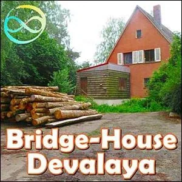
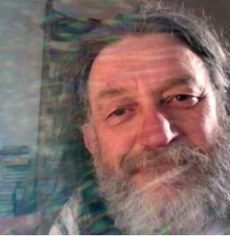

Bridge-House
DEVALAYA
- …
Bridge-House
DEVALAYA
- …

- Information- WHAT IS A BRIDGE HOUSE- A Bridge-House is a - rapid-learning- culture-shiftenvironment open to anyone who is fully participating in- Possibilitator Training.- The clarity that Bridge-House participants are - Possibilitatorson an authentic evolutionary Path insures that each Bridge House is contexted in:- Authentic Adulthood - Ongoing 3 Phase HealingandInitiatoryProcesses - Emotional Healing Processes - Radical Responsibility - High Drama - Upgraded Thoughtware - Archearchy (archived — not captured) - Torus Meeting Technologies(e.g. The Purple Card, Frying Pan, Wok, M.E.S.S., Wisdom Counsel, etc.) - and the Study Groups,Possibility Teams,Rage Clubs,Trainings,Tools,Thoughtmaps,Distinctions,S.P.A.R.K. Experiments, andProcessesofPossibility Management. - Each Bridge-House serves the world as an actual 'bridge' that leads from the - Thoughtwareedges of the modern- capitalist patriarchal empire, over the gap of the unknown, into regenerative and transformational life in next culture -- archearchy (archived — not captured)- the culture that is naturally emerging since matriarchy and patriarchy have run their course.- Every aspect of modern life as we have come to know it is unregenerative. - The known world is in a state of radical flux. It is groundless, and baseless, because modern culture is exterminating life on Earth at the fastest possible rate. - All known procedures are in question... commerce, education, health, government, military, religion, food production, lifestyle, transportation, clothing... but what are the answers? They too are unknown. This means that each Bridge-House is, by necessity, a research center, sharing the findings from their experiments with other Bridge-Houses around the world. - SPECIALTIES OF BRIDGE-HOUSE DEVALAYA- Every Bridge-House is unique due to its geographical location, projects specialties, and spaceholders. - Bridge-House Devalaya is characterized by numerous good fortunes: - Located in a safe rural area with four distinct seasons (southern Germany), yet mild winters and summers. - Thriving bee hives to learn apiary skills. - A living pond supporting many species. - Permaculture fruit and vegetable gardens with room for expansion. - A spaceholder happy to share outrageous food preparation and preservation skills, including herbs and ayurvedic medicines. - Building construction and regenerative living projects. - A high-energy center long used for spiritual practices. - A nearby waterway with active beavers. - Devalaya is also a creative space to share the next culture specialty talents you have already developed. - Most importantly, we want to liberate your true questions, the inner motivation driving you to develop and offer your piece of the great puzzle: how humans can live in regenerative culture on Earth together. - BRIDGE-HOUSE DEVALAYA CODEX- A Codex documents the Context and Rules of Engagement (how to play the game) of each Bridge-House - gameworld. The Codex explains the- Purpose, how things go, how you enter the gameworld, and how you leave it. Never a finished document, and never at the center of the gameworld, nonetheless the Codex is a crucial reference document that is available to the general public. - Authentic - Bridge-House Devalaya Gallery
- Divyám'shu Peter Konrad- The Bridge-House Devalaya central Spaceholder is Divyám'shu. - Divyám'shu purchased the land for Devalaya in Southern Germany nine years ago, already knowing that it would be dedicated to showing people new ways of living. - Divyám'shu's journey in Possibility Management began in 2016 at the - Expand The Boxtraining in Mallorca delivered by Clinton Callahan.- Since then he has been in 8 Possibility Labs from various Trainers, including most recently in Portugal. - Bridge-House Devalaya Gallery - A Report From Divyám'shu's - Journey Into The Earth- The Possibility Lab was organized in Mafra/Portugal from June 9th till 13th 2021 with participants from around the world at the Values University, which is the converted 18th Century residence of King João V while his palace at the town of Mafra, Portugal, was being built. Values University intends “to educate for values and happiness, detaching from a materialistic perspective of life, privileging a spiritual dimension, learning through experience, discovering the mysteries of nature and the self-reflection capacities, in contact with individual and collective consciousness… which gathers qualities of character, harmonious relationships, and civic responsibility.” In this ancient property Clinton and Anne-Chloé found a powerful gateway into the Earth, which we utilized for our process called “Journey into the Earth”.- The first step is to find a personal and meaningful question, to ask to some experienced entities, who are rarely contacted today and who are eager to help and support the true searchers for a betterment of the desolate state of our world. Every participant came up with three possible questions and in groups of three, each one presented the questions and the two others advised, which question to chose to be asked. My final question was “How can I unfold my Mage qualities and put them into practice?”- Each participant was sitting prepared with pen & notebook to safe the valuable informations with a half closed eye, sending the energetic body step by step to that close gateway into the earth, a small gothic arch from stone in an ancient wall under the shade of some old trees in the court of the University. We were instructed to knock at that door and see, who will open. Each participant was received by her/his own unique gatekeeper. I was knocking and waiting several times and I remembered that twice before in this process in other locations, no one received me and I was waiting for half an hour. - Not this time! - I didn’t notice, how the gate opened, and only after some moments I found a two-feet-high dwarf directly in front of me attracting my attention by waving with his arm. He had a long white beard, friendly slightly narrowed eyes, dark blue boots up to his knees and a lantern with a lit candle inside. - I introduced myself and asked his name. He replied: Kilian. - I asked him: " - Could you please take me to someone who can answer my question?" After he heard my question, he indicated with his free hand to follow him down a long, trodden, damp and cool stone stairway.- We reached a wide dimly lit cavern with clay walls and he directed me to go to a Lady, the only person in the room, who was sitting in an armchair. She appeared to be in her seventies with a cordial smile on her shining face, dressed in flowing velvet in earth colors with a delicate crown made of rosehips contrasting her long grey hair. Such a motherly and caring personality! What a cordial and dignified reception. - I introduced myself and she told me her name: Terrana. Before I could pose my question, she welcomed me with her heart-warming voice. “ - I am happy you came to me. The world is suffering and we wait for your healing, for your rare love. We were following your first Mage steps with deep joy. You are unfolding the miracle of love and you create a wave of healing. Healed people will be beneficial for nature to recover. You will teach this love to a few, ignite them and they will spread it manifold. Don’t be shy. We are all fully behind you. Just call my name and remember me, when you are desperate. This wave of love will make Your life so rich. The place where you live will be thriving with good people.” I asked her: ”- How can I find the right people to work with?” She answered: “- We will all cooperate. It was important that you took the first steps. In your house, dedicate one room as a mage room for your healing work. The days of your loneliness are over. Be ready for much work. So many are waiting for you! You are blessed. Your heart problem will be healed in four months. Your love and respect for nature feeds us. Our blessings are with your endeavors. Take bold steps." I asked: “- Can You please tell me more?”- She continued: “ - Make use of the- high energy fountain from the Earth which is located at the hawthorn tree near the vegetable garden in your property. A friend showed you some years ago how to energize the drinking water and the healing stones. People will help you to create a space where one can sit and absorb this soothing flow. Also, take help from friends. Don’t be shy to ask; they are waiting to help you.” My next question was: “- Can You tell me about Your own life?”- She happily responded: “ - We live beyond time. I just took a physical frame to get in touch with you. I am fed by your love and respect for nature. Please come again. I enjoy your company and I am grateful that you took the trouble to come here and meet.”- After I thanked her for her uplifting support and intense expression of love, Kilian, the dwarf guided me back to the gate. Remembering this meeting fills me with so much warmth, assurance. and inspiration. - Bridge-House Devalaya Gallery - Bridge-House Devalaya Projects- #### each project is a training framework for a spaceholder, two apprentices, and the entire Bridge-House Team1- ### CARING FOR THE 2021 PERMACULTURE GARDENS- SPACEHOLDER: - APPRENTICE 1: - APPRENTICE 2: - BUDGET: - ESTIMATED FINISH DATE: 2- ### EXPANDING THE BIO-RESERVE POND- SPACEHOLDER: - APPRENTICE 1: - APPRENTICE 2: - BUDGET: - ESTIMATED FINISH DATE: 3- ### REBUILDING THE MAIN HOUSE ATTIC- SPACEHOLDER: - APPRENTICE 1: - APPRENTICE 2: - BUDGET: - ESTIMATED FINISH DATE: 4- ### CHOPPING AND STORING FIREWOOD- SPACEHOLDER: - APPRENTICE 1: - APPRENTICE 2: - BUDGET: - ESTIMATED FINISH DATE: 5- ### HARVESTING FOOD- SPACEHOLDER: - APPRENTICE 1: - APPRENTICE 2: - BUDGET: - ESTIMATED FINISH DATE: 6- ### FOOD PRESERVATION- SPACEHOLDER: - APPRENTICE 1: - APPRENTICE 2: - BUDGET: - ESTIMATED FINISH DATE: 7- ### CARING FOR BEEHIVES- SPACEHOLDER: - APPRENTICE 1: - APPRENTICE 2: - BUDGET: - ESTIMATED FINISH DATE: 8- ### HARVESTING 2021 HONEY- SPACEHOLDER: - APPRENTICE 1: - APPRENTICE 2: - BUDGET: - ESTIMATED FINISH DATE: 9- ### HARVESTING FRUIT FROM TREES- SPACEHOLDER: - APPRENTICE 1: - APPRENTICE 2: - BUDGET: - ESTIMATED FINISH DATE: 10- ### PRUNING THE FRUIT TREES IN WINTER- SPACEHOLDER: - APPRENTICE 1: - APPRENTICE 2: - BUDGET: - ESTIMATED FINISH DATE: 11- ### MAKING JAMS, JELLIES, AND PRESERVES- SPACEHOLDER: - APPRENTICE 1: - APPRENTICE 2: - BUDGET: - ESTIMATED FINISH DATE: 12- ### VEGETARIAN AND VEGAN COOKING AND BAKING- SPACEHOLDER: - APPRENTICE 1: - APPRENTICE 2: - BUDGET: - ESTIMATED FINISH DATE: 13- ### WEEKLY POSSIBILITY TEAM- SPACEHOLDER: - APPRENTICE 1: - APPRENTICE 2: - BUDGET: - ESTIMATED FINISH DATE: 14- ### HARVESTING, PRESERVATION, AND USING HERBS- SPACEHOLDER: - APPRENTICE 1: - APPRENTICE 2: - BUDGET: - ESTIMATED FINISH DATE: 15- ### RECONSTRUCTING THE CLAY BUNGALOW- SPACEHOLDER: - APPRENTICE 1: - APPRENTICE 2: - BUDGET: - ESTIMATED FINISH DATE: 16- ### ONLINE RAGE CLUB- SPACEHOLDER: - APPRENTICE 1: - APPRENTICE 2: - BUDGET: - ESTIMATED FINISH DATE: 17- ### REPAIRING THE ROAD- SPACEHOLDER: - APPRENTICE 1: - APPRENTICE 2: - BUDGET: - ESTIMATED FINISH DATE: 18- ### NAVIGATING DAILY LIFE TOGETHER- cooking and cleanup - caring for house plants - vacuuming - cleaning toilets, bathrooms, entryway - replacing toilet paper - doing laundry, schedule and procedures - shopping list, shopping schedule - daily and weekly schedule of meetings, spaceholders, meals, etc. - SPACEHOLDER: - APPRENTICE 1: - APPRENTICE 2: - BUDGET: - ESTIMATED FINISH DATE: 19- ### COMPOSTING, RECYCLING, TRASH- procedures for composting, recycling, and trash - location of composting, recycling, and trash bins - timing of turning compost, moving the big trash cans for pickup, etc. - SPACEHOLDER: - APPRENTICE 1: - APPRENTICE 2: - BUDGET: - ESTIMATED FINISH DATE: 20- ### CONSTRUCTING A SAUNA IN A WAGON- SPACEHOLDER: - APPRENTICE 1: - APPRENTICE 2: - BUDGET: - ESTIMATED FINISH DATE: - Bridge-House Devalaya Gallery - Bridge House Devalaya Updates- UPDATE #1: 22 September 2021- by Divyám'shu - In April 2021 when I first heard about the concept of a - Bridge-Housefrom Clinton and Anne-Chloé it resonated so deeply with me and created new ideas about Devalaya. I had bought this property nine years ago to establish a yoga community and live here with my daughter Janna. The result of various spiritual programs over the years is a sentient, peaceful and inspiring atmosphere. The goal of Bridge-House Devalaya is:- to create a permanent space for a community of Possibilitators - to practice and live for a certain amount of time various aspects of Possibility Management - to gap the Bridgeover the unknown from thepresentcapitalisticpatriarchalthoughtware to next culture -archearchy (archived — not captured) - to exchange ours skills - to coacheach other withfeed-back - to be a part in supporting the evolution of beings - to experience how this spaceis transforming and integrating so different personalities, - to see Boxescrumble, including mine. - The early plan, which was to start in accordance with the seasons on Equinox, Sept 22nd with a commitment for three months participating and living here, had to be changed. - We did start two months earlier with the arrival of Nicole Hartley Bradford (who had to leave after three weeks due to visa limitations) and Gabriel Millinger, who lives here since then. In the meantime various visitors were inspired to be here. Let me share with you, how we live. We just had an amazing two weeks at Bridge-House Devalaya: On Monday, 6th September 2021, Kian arrived and was welcomed with a cacao gathering at the open fire on the porch.- The next day, Carola came and the day after that, Jule Geller (we were all together in various Labs in Mafra/Portugal in June) and both stayed for five days. - Almost daily we sat from 7:30 a.m. in silence for 35 min, then 25 min physical exercises and a check-in. We worked together near the pond, making it accessible again by digging and pulling out overgrowing shrubs and small trees (tough work!) and freeing the eight meters diameter Tree Circle of 170 black alder trees, which was planted in May, from over two meters high weeds. The trees can breath much better now and the circle was ready as a holy space for the first EHP I held in the open air. - We got a lot of work done and had also - Fun, enjoying our community. Every morning we were harvesting fresh stinging nettle tips for a vitalizing smoothie. It worked out fine for everyone to have two meals a day: around 11 a.m. and at 7 p.m. with salads and partly fresh or preserved vegetables from our own garden.- On Wednesday we had fun at a nearby Cornfield Labyrinth. In the evenings the near lake with clear water invited for a refreshing swim. On Friday we practiced holdings and a - 4-feelings- 333 Practice, guided by Kian. We spontaneously invited people for a- Rage Clubon Saturday, Jule and Kian- held space. Hannes from Neu-Ulm and Shivánii joined us.- The dragon speaking impressed me deeply! - On Sunday I had invited some local friends who had requested me to teach them the secrets to produce the Devalaya herbal healing balm, they had received last year. We gathered various herbs from the site and the garden, cut them and melted larch-resin and bees wax in oil, stirring with the herbs for half an hour to extract and stirring another half hour to cool the balm to a smooth consistency. - At the same time we produced nettle salt by grinding by hand fresh leaves with sea salt and while they were working I read out about the amazing health benefits of nettles. On Wednesday Julie and Peter arrived. Julie feels connected to this place after her first visit and had offered to support Devalaya by harmonizing earth energies outside and in the house with geomantic techniques.- We practiced to - connect to Gaiato support a- healing processand receive healing ourselves. If You want to experience this energetic field Yourself, please get in touch with me. At present we are open to visitors. - to create a permanent space for a community of - Bridge-House Devalaya Gallery - Contact Us- BRIDGE-HOUSE DEVALAYA INQUIRY FORM
- NOTE:This website is a- Bubble in the Bubble Map- StartOver.xyz- doorway- experiments- upgrade your thoughtware- point of origin- create- possibility- knowledge- about. Your- thoughtware- with. When you- change your thoughtware- liquid state- reorganizes- feelings- emotions- upgrading your thoughtware- build matrix- consciousness (archived — not captured)- low drama- reactivity- collectively build- responsibly- BHDEVALA.00to log your Matrix Point for reading this website on- StartOver.xyz
- Contact Us- BRIDGE-HOUSE DEVALAYA INQUIRY FORM
- NOTE:This website is a- Bubble in the Bubble Map- StartOver.xyz- doorway- experiments- upgrade your thoughtware- point of origin- create- possibility- knowledge- about. Your- thoughtware- with. When you- change your thoughtware- liquid state- reorganizes- feelings- emotions- upgrading your thoughtware- build matrix- consciousness (archived — not captured)- low drama- reactivity- collectively build- responsibly- BHDEVALA.00to log your Matrix Point for reading this website on- StartOver.xyz